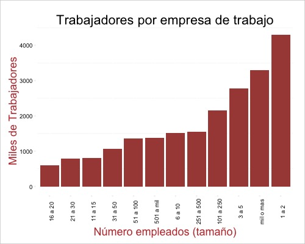
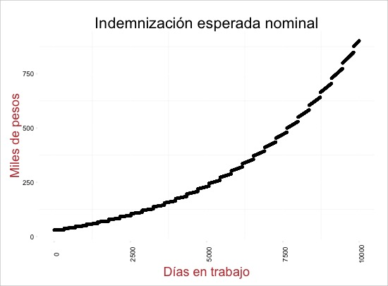

Propósito
Purpose
This study is a continuation of an initial framework (available, in Spanish, here) for innovation in Aseguradora Patrimonial Vida. Back then, it was considered a priority to further explore three types of insurance: against unemployment, wellfare and other fiscally-driven alternative schemes.
This is the case of the first: insurance against unemployment. We will divide the research in three main areas, as well as an initial product design: - Market potential - Legal potential - Risk potential
This is a first research, intended to serve as a launching point for the final design of a comprehensive product by further outlining changes proposed by APV, its partners or its risk area.
Summary
Unemployment insurance (employee funded), is something new in the mexican market. Both private and public entities have tried to implement a sort of unemployment insurance, but this product intends to attach the product to a more institutional partner: the company.
As its name implies, unemployment insurances cover an eventuality related to personal loss of work. The main issue with these kinds of insurances is finding those subjects that present no moral risk (1), which means they have no obvious incentive for mantaining themselves uninsured and thus cashing the insurance constantly.
Suppliers of these kinds of insurances, which sometimes includes governments, try to reduce this risk by limiting the amount and times a payment can be made.
For example, the insurance proposed in the latest Tax Reform includes decreasing payments, thus efectively increasing the incentive to find work as time goes by.
These types of insurance basically need two components to be properly sold:
- An objective and fraud-free way to prove unemployment
- Sufficient data (or a large pool) to extract unemployment risks
Generally speaking, it is sometimes difficult for the insurance agent to find this probably in a small pool of risk, given that the event depends upon the actions of a third party (the employer).
However, in an insurance based on the same event, but tailored for employers, as is proposed, both components are well known by the insurance agent. A new posibility for fraud is opened: the employer might induce this event to his convenience if there are gains to be made.
Without sufficent locks in place, this might be a high risk liability. However, under a sufficiently strict contrat, it is both posible to reduce this risk considerably and have comercial sense.
The insurance described earlier also has an added benefit for the client: it could help to prevent cash-flow crisis and smooth out any large swings in demand o sales.
Many companies have some sort of fund or budget for layoffs during a “normal” growth period. If the circumstances were to become volatile, this fund would likely be surpassed easily if more layoffs are created during the period than those forecasted.
In this case, the insurance would act as a sort of automatic stabilizer. In exchange for a monthly or anual payment, this contract would pay the beneficiary when its conditions for payment of layoff obligations would be met.
Under these circumstances, the company maintains certain agility with respect to its competitors, by adapting better to demand shocks and managing cash-flow more smoothly.
An added perk is the potential fiscal incentive this insurance would provide.
~ | General scheme
An overview of the general insurance scheme can be further seen here.

As long as the payment is lower than the potential fiscal savings for the company, this is a convenient scheme.
On the other hand, the insurance is transparent for the worker: as long as he or she receives payment as a layoff, the company will suffer no legal harm under current legislation.
Market Potential
~ | Demographics
To measure the potential market for the product, we must reduce the entire analisis to formally constituted enterprises. A formal company is much more prone to paying the entirety of the legal compensation package for layoffs.
According to ,in Mexico there are currently 5.65 millon companies.
Total companies in the INEGI database are further expanded by a “shadow” economy estimated at 30% (2). Out of these, an estimated 40% (according to INEGI (3) estimates) are formally constituted.
This yields a potential for 2.93 millon companies at the national level.
The distribution of these can be obtained by the distribution of the total companies compiled by INEGI:
If we were to insist on a product that reduces the insurance agents risk considerably, we would concentrate only on the last decile (companies with more than 750 employees). These companies employ a disproportionate amount of people that their weight in total of companies:

Thus, this last calculation gives us an estimate of at least 293 thousand businesses and aproximately 4.67 millon employees (4).
~ | Needs-based
Insurances of this kind have a large market, but have been limited by constraints of risk. In fact (Congleton, 2012) argues that after all economic crisis, the payment of these are given in an “ex post” fashion. For example, governments are pressed to provide the benefit prior to paying the price (“what is commonly known as a “bailout”).
crisis insurance is a type of insurance that private markets under-provide, even though there is broad demand for such financial instruments.
[...]
Although some groups are more effective at gaining “ex-post insurance” programs than others, a broad range of loss-limiting programs are routinely provided by democratic governments after unusually bad weather, earthquakes, epidemics, and economic crises.
(Congleton, 2012)
In a country with less flexible labor laws such as Mexico, there is also scope for more efficient financial planning.
Qouting the same author:
the ability to respond to unpleasant surprises is nearly always enhanced by the existence of readily available pools of resources that can be used to address a crisis and its consequences.
(Congleton, 2012)
According to current legislation, and making a superficial analysis, the expected payoff compensation is about (in the newest workers) 340% of the monthly salary, which means that companies face heavy costs when streamlining its workforce.
The current compensation scheme is complicated, but doing simulations of a fixed set of scenarios (the methodology can be found here ) we find interesting conclusions.
First, the expected payoff for laying of an employee by law (5) forces companies to a de-facto probation and disproportionately compensates the employee as it accumulates years with the company. In practice, this is about a period of three months (the three months of payment decried by Article 123 of the Constitution). Even with a fixed salary, compensation becomes a more attractive option for the employee as time goes by.
For example, even in the middle salary range (approximately 5 minimum wages), without nominal income growth, after 15 years of work, the payment is approximately 17 months of salary.

Second, the legislation also encourages job mobility (or protects, depending on how you look) in the lower income strata. The incentive received by layoff payment decreases first rapidly, up to about 15 minimum salaries (about 31 thousand pesos).

In the previous scenario, we assume no growth in wages (not even adjusting for inflation). However, looking at a conservative increase of 4% annually for inflation and 2.5% for productivity growth and new responsabilities, we get a much steeper curve

According to a number of economic studies (Smart & Stabile, 2005), the nominal is more important in the minds of economic subjects that the relative value (in this case the percentage of a salary). Therefore, it can be tentatively concluded that the incentive is increased much more than linearly, as the employee stays longer on the job.
Of course, all this assumes that the employee acts according to the incentive of layoff payment. In practice, the decision is not the employees but their employers. However, the employee can influence the probability of this happening, for example affecting their work performance considerably.
Many factors come into consideration in an employment relationship, including some non-monetary, however, it cannot be ignored that the incentive to be laid-off is growing with time, a predicament that employers definitely want to avoid.
There is also an additional point: it has been proven in several studies that unemployment insurance generates potential health benefits.
In two particularly rigorous studies they found limited but significant effects:
-
A 63% increase in [unemployment] benefits completely offsets the impact of unemployment on self-reported health
(Cylus, Glymour, & Avendano, 2014) -
A 1% increase in [unemployment] benefits was associated with 18% lower odds of CVD [Cardio-vascular disease]
(Walter, Glymour, & Avendano, 2014)
In this sense, there is even a potential to package this product with a traditional life insurance product by offering a small discount under this logic.
~ | Conceptual Framework
For a frame of reference about the benefits of insurance as proposed, we can generalize some of the previous concepts for a product:
- The premium as a percentage of salary, would be the same up to about 15 minimum wages, decreasing thereafter.
- The premium would be increasing with years in the company.
- The payment should be sufficiently large to make business sense for the customer, but not enough to induce a risk for colusion with the employee.
Legal Potential
While the income taxes law (LISR) contains no specific mention about these types of financial instruments, the same law establishes a maximum amount of insurance premium deductibility for 152 thousand pesos annually. Thus, because each premium covers one employee, the potential for savings is substantial.
The same LISR contains specific mentions of retirement products. In these cases, the insured does not pay tax if the insurance is cashed after retirement.
It would be relatively easy to include a similar scheme in this product, ensuring the collection of the amount by the retirement age of the insured.
The latter would depend, of course, on the age of the insured, as well as the characteristics of the employees contract.
The scheme can be initially sold as a product for retirement with a component of a non-voluntary termination of employment. If termination is never given, to the date of retirement, the beneficiary (in this case the company) can collect the insurance without any tax charges.
~ | Public attempts
In 2002, a pilot program called System of Economic Support to Job Seekers, which was part of the Employment Support Program, was aimed at people who had lost their jobs. Support was up to a minimum wage, granted for 1 month (Maya Bautista, 2012).
However, since then Administered Retirement Funds (Afores) have offered the option to retrieve up to ten percent of the total accumulated in the worker’s account once every five years for unemployment (Maya Bautista, 2012).
In 2007, the Government of the Federal District created unemployment insurance, establishing it as a government program as of August 28, 2008 based on the Law on Protection and Promotion of Employment for the Federal District, passed by the Assembly of the Federal District and published October 8th of that same year.
Operating rules were added in 2015 to provide, among others, the following:
- The insurance payment is to be delivered to the beneficiary through a bank card or other mechanism equivalent to 30 times the unit of account (6) of Mexico City. (7)
- Beneficiaries can only access insurance for a period not exceeding six months, every two years.
In 2013, as part of a Tax Reform, a nationwide unemployment insurance through the Mexican Social Security Institute (IMSS) was proposed. This initiative, reflected in the draft of the Law of Unemployment, contemplated the following payments, according to the average salary registered in the last 24 months with IMSS:
| Month | 1 | 2 | 3 | 4 | 5 | 6 |
| % de Salay | 60% | 50% | 40% | 40% | 40% | 40% |
However, the final bill instead of a universal insurance paid in full by state coverage, Congress opted for a shared scheme, as in the case of Argentina and Chile (8).
This scheme provides funding through a fund of contributions that the employer is currently obliged to pay the Infonavit, equivalent to 5% of the salary. That contribution, 40% will be deposited in a mixed sub account and 20% to a solidarity fund.
If the worker acquires a loan from Infonavit, he can use the balance in the mixed sub account intended for unemployment. Subsequent contributions are used to pay the outstanding balance of this loan.
Should the employee become unemployed, used his mixed sub account and have an outstanding credit, he will only receive a fixed amount of one month’s minimum wage for up to six months.
The unemployment insurance benefit may only be received once every five years.
In practice, this means the employee must choose between unemployment insurance as a whole, at least in the medium term, and a home loan.
With this arrangement, both employers or government expenditures were not significatnly compromised, but unemployment insurance remains a marginal financial product for most employees.
~ | Current financing scheme and unemployment insurance payments
| Contribution (% Salary) | Fund |
| 2% | Infonavit |
| 2% | Mixed sub account |
| 1% | Salidary fund |
~ | Further simplifications
As of June 2015, workers belonging to an AFORE who wished to withdrawl a portion from their fund for unemployment no longer need to go to the Mexican Social Security Institute (IMSS) to process the document certifying the loss of employment, as was previously required (9)
Other changes include marginal deductions for retirement accounts. To fund additional savings in the Afore sub account, workers are allowed to deposit up to 10% of income, without exceeding five general minimum wages.
The benefit applies only if the money spent meets the requirement for the retirement plan; it is used at the time of retirement.
Risk Potential
oral hazard is evident in an atypical case of collusion between employer and employee.
~ | Collusion
While there is no individual incentive to be fired, or incentive by the employer, there is potential for collusion. In a scenario of collusion, both parties collect insurance when the event does not exist. For example, the employee and employer may agree to an unjustified firing for the insurance, with a promise from the employer to give the job back a few days later and thus cash the insurance.
This is avoided by not covering the full cost of dismissal, which would also be a consistently bad deal for the insurer.
~ | Catastrophic situation
In an obvious situation where the insurance has to be collected in bulk, there may be a danger to the insurer.
For example, the company is close to bankruptcy or a crisis forces extraordinary layoffs.
In this sense, it would be in the interest of the insurer to create a simple clause: You can not collect more than n% of the labor force insurance contracts for any given month. For example, 10% allows a company of 750 employees to layoff a maximum of 75 employees while collecting the insurance.
~ | Event to insure
For insurance purposes, it is necessary to clarify the event and its details.
In Mexico, there are two existing compensation concepts:
-
Constitutional Compensation: As its name states, this compensation is founded on section XXII of Article 123 of the Constitution, where it is stated that the company must provide workers with three months of salary as compensation.
-
LFT comensation: The compensation is detailed in Article 50 of the Federal Labour Act and includes the following assumptions:
ARTICULO 50. LAS INDEMNIZACIONES A QUE SE REFIERE EL ARTICULO ANTERIOR CONSISTIRAN:
I. Si la relación de trabajo fuere por tiempo determinado menor de un año, en una cantidad igual al importe de los salarios de la mitad del tiempo de servicios prestados; si excediera de un año, en una cantidad igual al importe de los salarios de seis meses por el primer año y de veinte días por cada uno de los años siguientes que hubiese prestado sus servicios;
II. Si la relación de trabajo fuere por tiempo indeterminado, la indemnización consistira en veinte días de salario por cada uno de los años de servicios prestados; y
III. Además de las indemnizaciones a que se refieren las fracciones anteriores, en el importe de tres meses de salario y en el de los salarios vencidos desde la fecha del despido hasta que se paguen las indemnizaciones.
Which translates into:
-
- If the employment contract is for less than a year, in an amount equal to half the length of service in wages; if it exceeds one year, in an amount equal to the amount of six months’ wages for the first year and twenty days for each of the following years he had served;
-
- If the employment relationship is for an indefinite period, compensation will consist of twenty days’ wages for each year of service rendered;
-
- In addition to the compensation referred to in the preceding sections, in the amount of three months’ salary and the salaries due from the date of dismissal until the payment.
The insurance would cover a portion of these legal obligations in exchange for a monthly or annual premium based on the integrated gross salary of the insured employee.
~ | Uninsured cases
- If the Insured voluntarily give up their jobs.
- When the Insured is carrying out duties as CEO, shareholder or member of the board of the company.
- Unemployment resulting from the termination of the employment relationship by mutual consent.
- Dismissal or termination of employment for the reasons described in Article 47 of the Federal Labour Law (termination with cause). Ley Federal de Trabajo. (1970). Retrieved from http://www.diputados.gob.mx/LeyesBiblio/pdf/125_120615.pdf
- By the Insured’s participation in strikes or labor disputes and / or strikes.
- As announced by the employer prior to the date of commencement of the term of coverage, to reduce their workforce or start layoffs specifically or generally.
- When the Insured was aware that their unemployment would occur within ninety (90) days prior to the date on which the credit is contracted days.
~ | Additional clauses
In order to avoid catastrophic events, such as those used in the insurance industry of households events:
[...] home insurance policies have a maximum payout and routinely exclude losses from floods and revolutions (for which multiple, very large, simultaneous claims are likely)
(Congleton, 2012)
A series of clauses that prevent the immediate claim of a high number of policies is necessary:
- The insured can only claim a maximum of n% of the workforce of the company, per month or period.
- Events arising from job loss are excluded in the case of declared or undeclared war, civil commotion, insurrection, rebellion, mutiny, or nuclear catastrophe.
Estimates
A quick exercise, yields a couple of graphs of expected payments according to different scenarios (the methodology can be seen here).
~ | By varying the premiums (percentage of monthly salary)
- Company of 500 employees
- Average salary: 12,000 pesos (standard deviation of 2000 pesos)
- Average months without layoff: 30 months (standard deviation of 4 months)
- Premiums collected range from 1% to 10% of monthly salary.
~ | By varying the size of company
- Average salary: 12,000 pesos (standard deviation of 2000 pesos)
- Average months without layoff: 30 months (standard deviation of 4 months)
- Premiums: 8%
- Range of size of the company from 100 to 1000 employees.
~ | Varying the employment months
- Average salary: 12,000 pesos (standard deviation of 2000 pesos)
- Average months without layoff: range from 6-48 months (standard deviation of 5 months)
- Premiums collected: 8%
- Company of 500 employees
Fuentes
- Leisten, H. (2015). Perspectives in Insurance. BCG Perspectives. Retrieved from https://www.bcgperspectives.com/content/articles/insurance_perspectives_in_insurance/
- Larson, S. J. (2015). Considering Time in a Life Insurance Needs Analysis, (September), 62–72.
- Demaster, B., & Lyons, P. (2015). How Life Insurers Can Bring Their Business into the 21st Century. Harvard Business Review. Retrieved from https://hbr.org/2015/03/how-life-insurers-can-bring-their-business-into-the-21st-century
- Millo, G., & Carmeci, G. (2015). A Subregional Panel Data Analysis of Life Insurance Consumption in Italy. Journal Of Risk and Insurance, 340(2), n/a–n/a. doi:10.1111/jori.12023
- Guti, U. (2015). La reforma tributaria de 2013: los problemas de la Hacienda publica y la desigualdad en Mexico, XXII(64), 69–100.
- Sheila, M., & Gonzalez, G. (2015). Reforma Hacendaria: la importancia del Regimen de Incorporacion Fiscal como medida de desarrollo economico en Mexico y posibles impactos, 71–77.
- Katt, P. C. (2015). History of Cash Value Life Insurance and Implications for Existing Policies, (August).
- Bohnert, A., Gatzert, N., & Jorgensen, P. L. (2015). On the management of life insurance company risk by strategic choice of product mix, investment strategy and surplus appropriation schemes. Insurance: Mathematics And Economics, 60, 83–97. doi:10.1016/j.insmatheco.2014.11.003
- Card, D., Johnston, A., Leung, P., Mas, A., & Pei, Z. (2015). The Effect of Unemployment Benefits on the Duration of Unemployment Insurance Receipt : New Evidence from a Regression Kink Design in Missouri, 2003-2013 , 105(5), 1–10. doi:10.1257/aer.p20151061
- Huber, C., & Schmeiser, H. (2015). HOW DOES PRICE PRESENTATION INFLUENCE CONSUMER CHOICE? THE CASE OF LIFE INSURANCE PRODUCTS, 431(2), 401–431. doi:10.1111/j.1539-6975.2013.12026.x
- International, B. M. (2015). Mexico Insurance Reports Q2-2012 - Q4-2015.
- Parrish, S. (2014). IRM Permanent Life Insurance in Financial Planning , (October), 30–33.
- Arranz, J. M. M., & Garcı́a-Serrano Carlos. (2014). Duration and Recurrence of Unemployment Benefits. Journal Of Labor Research, (June), 271–295. doi:10.1007/s12122-014-9184-6
- Maciaga B., S. A., Shah A., & A., S. (2014). The Fundamental Trends Reshaping Life Insurance. Retrieved from https://www.bcgperspectives.com/content/articles/insurance_fundamental_trends_reshaping_life_insurance/
- Stavrunova, O., & Yerokhin, O. (2014). Tax incentives and the demand for private health insurance. Journal Of Health Economics, 34(1), 121–130. doi:10.1016/j.jhealeco.2014.01.001
- Littlewood, J. (2014). 2014 Global Insurance Outlook. Ernst &Amp; Young, Global Reports. Retrieved from http://www.ey.com/Publication/vwLUAssets/EY-latin-america-insurance-outlook-2014/$FILE/EY-latin-america-insurance-outlook-2014.pdf
- Cylus, J., Glymour, M. M., & Avendano, M. (2014). Health Effects of Unemployment Benefit Program Generosity. American Journal Of Public Health, 105(2), 317–323. doi:10.2105/AJPH.2014.302253
- Reader, G. (2014). A New World of Opportunity: The insurance innovation imperative. KPMG Global Insights. Retrieved from https://www.kpmg.com/CN/en/IssuesAndInsights/ArticlesPublications/Documents/A-New-World-of-Opportunity-insurance-innovation-O-201509.pdf
- Yoon, E. (2014). Finding Your Superconsumers When It Isn’t Obvious Who They Are. Harvard Business Review. Retrieved from https://hbr.org/2014/05/finding-your-superconsumers-when-it-isnt-obvious-who-they-are
- Tool, C. F. (2014). Insurance & Risk Management, (March), 34–37.
- Walter, S., Glymour, M., & Avendano, M. (2014). The Health Effects of US Unemployment Insurance Policy: Does Income from Unemployment Benefits Prevent Cardiovascular Disease? PLoS ONE, 9(7), e101193. doi:10.1371/journal.pone.0101193
- Hannsgen, G. (2014). Fiscal Policy, Chartal Money, Mark-up Dynamics and Unemployment Insurance in a Model of Growth and Distribution. Metroeconomica, 65(3), 487–523. doi:10.1111/meca.12050
- Lorson, J., & Wagner, J. (2013). Sales Efficiency in Life Insurance: On Growth and Profitability in the German Market. I.VW-HSG Working Paper, (2009). doi:10.1057/gpp.2013.35
- Gersbach, H. (2013). Preventing Banking Crises—with Private Insurance? CESifo Economic Studies, 59(4), 609–627. doi:10.1093/cesifo/ifs043
- Hendren, N. (2013). Private Information and Insurance Rejections. Econometrica, 81(5), 1713–1762. doi:10.3982/ECTA10931
- Silva, K. R., & Afonso, L. E. (2013). A Study on life microinsurance in Brazil. Brazilian Business Review (English Edition), 10(3), 130–155. doi:10.15728/bbr.2013.10.3.6
- Torre, a. D. L., Feyen, E., & Ize, a. (2013). Financial Development: Structure and Dynamics. The World Bank Economic Review, 27(3), 514–541. doi:10.1093/wber/lht005
- Wu, X., & Gan, L. (2013). Multiple Dimensions of Private Information in Life Insurance Markets. Retrieved from http://www.nber.org/papers/w19629
- Sen, S., & Madheswaran, S. (2013). Regional determinants of life insurance consumption: Evidence from selected Asian economies. Asian-Pacific Economic Literature, 27(2), 86–103. doi:10.1111/apel.12024
- Maya Bautista, J. E. (2012). Pacto por Mexico: Seguro de Desempleo. Retrieved from http://ciep.mx/entrada-investigacion/pacto-por-mexico-seguro-de-desempleo/
- Hong, J. H., & Rı́os-Rull José-Vı́ctor. (2012). Life Insurance and Household Consumption. American Economic Review, 102(7), 3701–3730. doi:10.1257/aer.102.7.3701
- Catastrophes, N. F. O. R., & Insurance, X. (2012). Insurance Against Financial Crises ? Business, (62), 16–18.
- Congleton, R. D. (2012). On the political economy and limits of crisis insurance: the case of the 2008-11 bailouts. Public Choice, 150(3/4), 399–423. doi:10.2307/41406889
- Liebertberg, A. P., Carson, J. M., & Dumm, R. E. (2012). a Dynamic Analysis of E Demand for Life Insurance, 79(3), 619–644. doi:10.1111/j.l539-6975.2011.01454.x
- Sliwinski, A., Michalski, T., & Roszkiewicz, M. (2012). Demand for Life Insurance—An Empirical Analysis in the Case of Poland. The Geneva Papers On Risk and Insurance Issues and Practice, 38(1), 62–87. doi:10.1057/gpp.2012.21
- Gatzert, N., Holzmüller, I., & Schmeiser, H. (2012). Creating Customer Value in Participating Life Insurance. Journal Of Risk and Insurance, 79(3), 645–670. doi:10.1111/j.1539-6975.2011.01453.x
- Paper, W., Econ, B., & Papers, D. (2011). The Effect of Secondary Markets on Equity-Linked Life Insurance with Surrender Guarantees, 81(4), 943–968. doi:10.1111/j.1539-6975.2013.12003.x
- Chen, H.-Y., Lee, C.-F., Tai, T., & Wang, K. (2011). Fiscal and Monetary Policies in Reaction to the Financial Tsunami by the Taiwanese Government. Review Of Pacific Basin Financial Markets and Policies, 14(01), 153–169. doi:10.1142/S0219091511002172
- Koven, E., R. & Zimmerman. (2011). Is There a Business Case for Microinsurance? A review of recent literature. Retrieved from http://www.microinsurancecentre.org/resources/documents/business-case-for-microinsurance/is-there-a-business-case-for-microinsurance-a-review-of-recent-literature.html
- Giesbert, L., Steiner, S., & Bendig, M. (2011). Participation in Micro Life Insurance and the Use of Other Financial Services in Ghana. Journal Of Risk and Insurance, 78(1), 7–35. doi:10.1111/j.1539-6975.2010.01405.x
- Lancaster, L. (2010). Changes in Federal and State Unemployment Insurance Legislation in 2009. Monthly Labor Review, 133(1), 37–58. Retrieved from http://www.bls.gov/opub/mlr/#\backslashnhttp://search.ebscohost.com/login.aspx?direct=true&db=ecn&AN=1112916&site=ehost-live&scope=site
- Gatzert, N. (2010). The secondary market for life insurance in the United Kingdom, Germany, and the United States: Comparison and overview. Risk Management And Insurance Review, 13(2), 279–301. doi:10.1111/j.1540-6296.2010.01187.x
- Ibiwoye, a, Ideji, J., & Oke, B. (2010). the Determinants of Life Insurance Consumption in Nigeria: a Co-Intergration Approach. INTERNATIONAL JOURNAL Of ACADEMIC RESEARCH, 2(4), 351–359. Retrieved from http://scholar.google.com/scholar?hl=en&btnG=Search&q=intitle:THE+DETERMINANTS+OF+LIFE+INSURANCE+CONSUMPTION+IN+NIGERIA:+A+CO-INTERGRATION+APPROACH#0
- Fang, H., & Kung, E. (2010). How does life settlement affect the primary life insurance market? Retrieved from http://www.nber.org/papers/w15761
- Sinha, R. P. (2010). Revenue Maximizing Efficiency of Life Insurance Companies : Some Indian Evidence.
- Ching, K. S., Kogid, M., & Furuoka, F. (2010). Causal Relation between Life Insurance Funds and Economic Growth Evidence from Malaysia. Asean Economic Bulletin, 27(2), 185. doi:10.1355/ae27-2c
- Shatto, P. D., & Costonis, M. (2010). The Life Insurance Industry Needs To Get With The Times. Forbes. Retrieved from http://www.forbes.com/2010/01/13/life-insurance-industry-leadership-managing-marketing.html
- Harris, R. L. (2009). Life Insurance and Wealth A Perfect Combination for the Ultra-Afluent, 114–119.
- Courtemanche, C., & He, D. (2009). Tax Incentives and the Decision to Purchase Long-Term Care Insurance. Journal Of Public Economics, 93(1-2), 296–310. doi:10.1016/j.jpubeco.2008.05.007
- Macias, J. B., & Cazzavillan, G. (2009). The dynamics of parallel economies. Measuring the informal sector in Mexico. Research In Economics, 63(3), 189–199. doi:10.1016/j.rie.2009.07.004
- Johnson, R. A. Y. C. (2008). Funding in the Life Space, 62–70.
- Khurana, S. (2008). Customer Preferences in Life Insurance Industry in India, VI(3), 60–69.
- Baldwin, B. G. (2008). Life Insurance Considerations in a Rapidly Changing World, (August).
- Athma, P., & Kumar, J. R. (2007). An Explorative Study of Life Insurance Purchase Decision Making : Influence of Product and Non-Product Factors, IV(4), 40–49.
- Lenten, L. J. a., & Rulli, D. N. (2006). A Time-Series Analysis of the Demand for Life Insurance Companies in Australia: An Unobserved Components Approach. Australian Journal Of Management, 31(1), 41–66. doi:10.1177/031289620603100104
- Fraser, M. (2006). Back to the future for the Commonwealth. The Round Table, 95(January 2015), 657–660. doi:10.1080/00358530601046737
- Cowley, A., & Cummins, J. D. (2005). Life Insurance Assets, 72(2), 193–226.
- Smart, M., & Stabile, M. (2005). Tax Credits, Insurance, and the Use of Medical Care. Canadian Journal Of Economics, 38(2), 345–365. doi:http://onlinelibrary.wiley.com/journal/10.1111/%28ISSN%291540-5982
- Jappelli, T., & Pistaferri, L. (2003). Tax incentives and the demand for life insurance: Evidence from Italy. Journal Of Public Economics, 87(7-8), 1779–1799. doi:10.1016/S0047-2727(01)00180-3
- Pauly, M. V., Withers, K. H., Hershey, J. C., Asch, D. a, Subramanian-viswanathan, K., Lemaire, J., & John, C. (2003). Price Elasticity of Demand for Term Life Insurance and Adverse Selection, 1–44. Retrieved from http://www.nber.org/papers/w9925
- Hendel, I., & Lizzeri, A. (2003). The Role of Commitment in Dynamic Contracts: Evidence from Life Insurance. The Quarterly Journal Of Economics, 118(1), 299–328. doi:10.1162/00335530360535216
- Berry, R. J. [S. (2002). The Future of Life. Jrsm, 95(10), 520–521. doi:10.1258/jrsm.95.10.520
- Brown, J. R. (2001). Are the Elderly Really Over-Annuitized? New Evidence on Life Insurance and Bequests. Themes in the Economics of Aging (pp. 91–126).
- Brown, J. R., & Poterba, J. M. (2000). Joint Life Annuities and Annuity Demand by Married Couples. The Journal Of Risk and Uncertainty, 67(4), 527–554. doi:10.2307/253849
- Auerbach, A. J., & Kotlikoff, L. J. (1989). HOW RATIONAL IS THE PURCHASE OF LIFE INSURANCE?, (3063).
- Horowitz, S. A. (1977). AND THE WORK TEST, 4(July), 462–467.
- Author, C., Lintner, J., Piper, T. R., Fortune, P., Lintner, J., & Fortune, P. (1977). Volume Publisher : NBER Forward Commitment Decisions of Life Insurance Companies for Investments in Bonds and Mortgages, 4(5), 1–50.
- Baily, M. N. (1977). Unemployment Insurance as Insurance for Workers. Industrial And Labor Relations Review, 30(4), 495. doi:10.2307/2523110
- Ley Federal de Trabajo. (1970). Retrieved from http://www.diputados.gob.mx/LeyesBiblio/pdf/125_120615.pdf
- O’leary, J. (1960). Forward Investment Commitments of Life Insurance Companies Forward Investment Commitments of Life Insurance Companies, 325–350.
- Malisoff, H., & Provisions-, E. (1959). INSURANCE, (August 1955).
Notas
-
That is, they find a way to encourage his dismissal or falsely report their employment status. ↩
-
The Macias, JB, & Cazzavillan, G. (2009) estimate. The dynamics of parallel economies. Measuring the informal sector in Mexico. Research In Economics, 63 (3), 189-199. doi: 10.1016 / j.rie.2009.07.004 is based on value produced, however we assume that the value is one to one with the number of companies. This estimate underestimates the value of the companies that produce above average, but these alone are few in number compared to the total number of jobs in Mexico. ↩
-
See: http://www.inegi.org.mx/est/contenidos/proyectos/cn/informal/ ↩
-
The estimate is made by taking the percentage of potential workers in those deciles of companies (21.6%) and multiplying by the estimated total potential (the total workforce in the country x 21.6%). The factor of informality is not deflated because it is assumed that a company with over 750 employees is formal. Thus, the base 2.93 million is considerably conservative (the effect of informality is potentially null in larger companies). ↩
-
Under a permanent contract. ↩
-
An Account Unit is a unit that replaces the minimum wage for government contracts in Mexico City since 2015. ↩
-
Approximately $ 2.099 pesos (a unit of account is 69.95 pesos) ↩
-
The shared schemes are less kind in their potential effect on the reduction of informality. ↩
-
The official announcement anticipated that the relationship with the IMSS was practically nullified. Link ↩